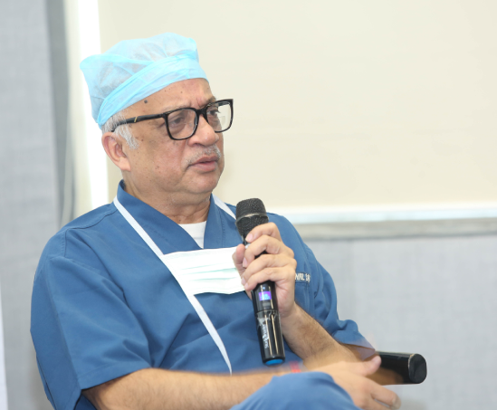
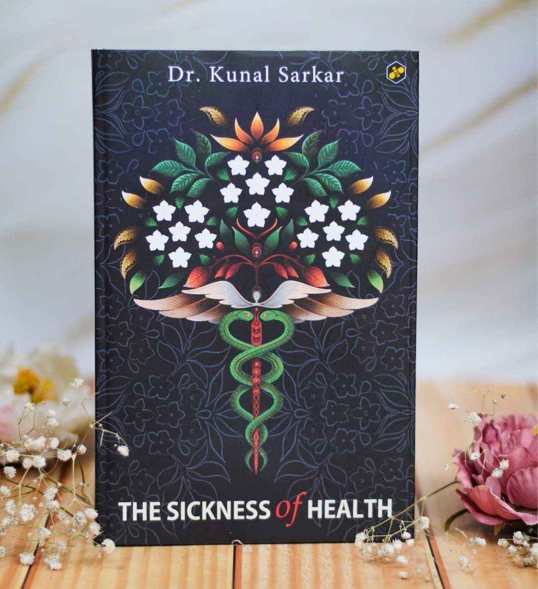

Dr. Kunal Sarkar is a distinguished cardiac surgeon, passionate about advancing the field of coronary surgery. With over three decades of experience, he is a leading authority in complex cardiovascular procedures and a fervent advocate for innovative surgical techniques.
He is the Chief Cardiac Surgeon and Director, Manipal Hospital, EM Bypass, Mukundapur, Kolkata, where he heads the hospital's cardiac department, overseeing numerous pioneering surgeries and patient care initiatives.
Dr. Sarkar’s expertise spans a broad range of areas, including off-pump coronary artery bypass grafting (CABG), bloodless heart surgery, total arterial bypass grafting, combined surgeries (CABG + Valve Surgery), and complex aortic surgeries.
His commitment to minimally invasive techniques and advanced surgery has made him a recognized figure in the global cardiac community. He is especially known for his expertise in performing more than 90% of coronary surgeries without the aid of a heart-lung machine and in performing complex redo surgeries.
His academic background is equally impressive. Dr. Sarkar graduated with a gold medal in surgery from the prestigious Medical College, Calcutta, where he also received 12 other awards in surgery. A National Scholar, he further honed his skills in the UK, training at renowned institutions such as the Cardiothoracic Centre Liverpool and St. Mary’s Hospital.
He is a Fellow of the Royal College of Surgeons in both Edinburgh and Glasgow and serves as a faculty member at Imperial College London.
Dr. Sarkar is a key contributor to the academic world, being intimately involved with major associations like the European Association for Cardio-Thoracic Surgery (EACTS) and the Indian Association of Cardiovascular and Thoracic Surgeons (IACTS), where he has served as President. He is also an active member of the South Asian Forum of Cardiothoracic Surgeons, where he seeks to foster collaboration and knowledge-sharing among surgeons in the region.
Utilizing evidence-led techniques to deliver precision-based outcomes in cardiovascular medicine.
Expertise in 90%+ coronary surgeries without heart-lung machines.
Advanced grafting surgery using LIMA RIMA Y techniques.
Keyhole heart surgery for faster recovery and minimal scarring.
Replacement and repair services for complex valve pathologies.
Pioneering surgeries for end-stage heart and lung failure.
Advanced artificial heart support and lung oxygenation services.
Specialized care for patients requiring multiple heart operations.
Treatment of aneurysms and complex aortic dissections.
Outside of his surgical expertise, Dr. Sarkar is a passionate debater, orator, and writer. He is the **President of the Calcutta Debating Circle (CDC)**, organizing India’s largest live debate events.

In his compelling book, Dr. Kunal Sarkar traces medical evolution from Hippocrates to contemporary science, addressing the afflictions of modern healthcare in India.